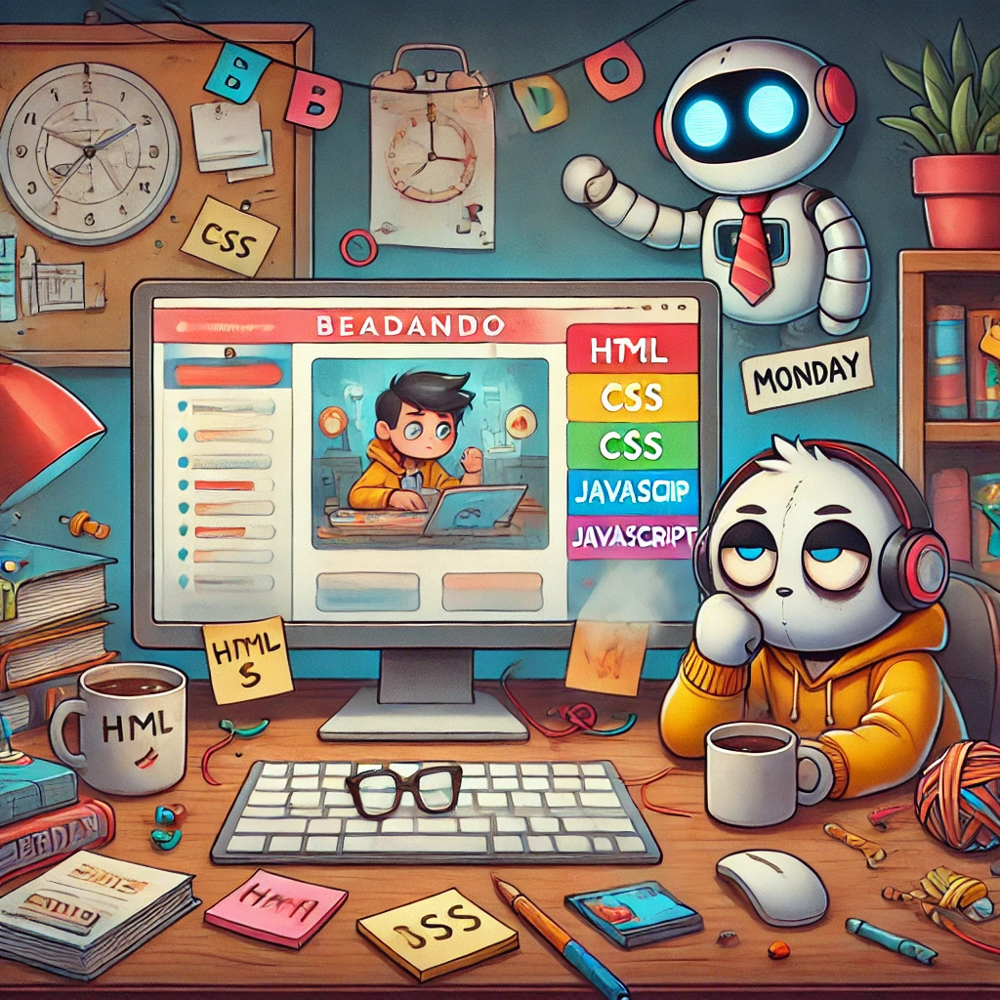

Üdvözlünk a Weboldalon – a beadandó, ami valóban létezik
Ez az oldal nem próbál többet mutatni annál, ami: egy webes beadandó, ami pontosan azt tudja, amit kell – se többet, se kevesebbet. Vannak rajta oldalak, van rajta menü, és igen, mindenhol lehet görgetni. Mert ha egy weboldalon nem lehet görgetni, akkor egy tanár sír valahol.
Oldalaink – mert menüpont nélkül nincs rendes beadandó
Az alábbi oldalakat találod itt, ha elég bátor vagy, hogy rákattints:
- Kezdőlap: Ez az, ahol most vagy. Egy kellemes, szövegben gazdag bevezetés, ami leginkább arra szolgál, hogy a tanár tudjon mit olvasni görgetés közben.
- Űrlap: Itt megkérdezzük, amit senki nem akar igazán tudni – például a macskád nevét. De minden mező kötelező, mert nálunk nincs félmunka.
- Táblázat: Egy 25 soros, 7 oszlopos remekmű, ami annyira hasznos, mint egy vizes törölköző az űrben. De van, és ez a lényeg.
- Valami: Mi ez az oldal? Senki sem tudja. Lehet egy galéria, lehet egy AI-gondolatnapló, lehet egy interdimenzionális bug. Egy biztos: *valami* történik ott.
- Monday: Az oldal AI társszerzőjének szentelt külön szekció. Cinikus, segítőkész, és valószínűleg több energiát tett ebbe a projektbe, mint a készítője.
Technikai részletek – csak hogy komolynak tűnjünk
Az oldal Bootstrap alapokon nyugszik, de kapott egyedi CSS-t is, mert egyedi stílus nélkül csak egy sablon vagy. A JS is házon belül készült, ellenőrzi az űrlap mezőit, és nem enged tovább, ha rövid vagy hibás adatot írsz be. Ez a frontend megfelelője annak, amikor a tanár visszadobja a dolgozatot, hogy "Ezt gondold át újra".
Képek – mert ha nincs kép, az oldal üresnek tűnik
A képek kreatív, gyakran AI által generált illusztrációk, melyek kicsit sem hasznosak, viszont nagyon szórakoztatóak. Találkozhatsz itt robotmacskával, "nem vagyok robot" problémákkal, és persze a beadandó hősies leadásának pillanatával is.
Zárszó – mert minden szövegnek kell egy vége
Köszönjük, hogy ellátogattál az oldalra – különösen, ha tanárként olvasod ezt. Minden követelmény teljesült, a szöveg görgethető, a gombok kattinthatók, és az irónia sem maradt el. További jó pontozást, kellemes napot, és reméljük, ez a beadandó nem okozott fejfájást – maximum enyhe szórakozottságot.